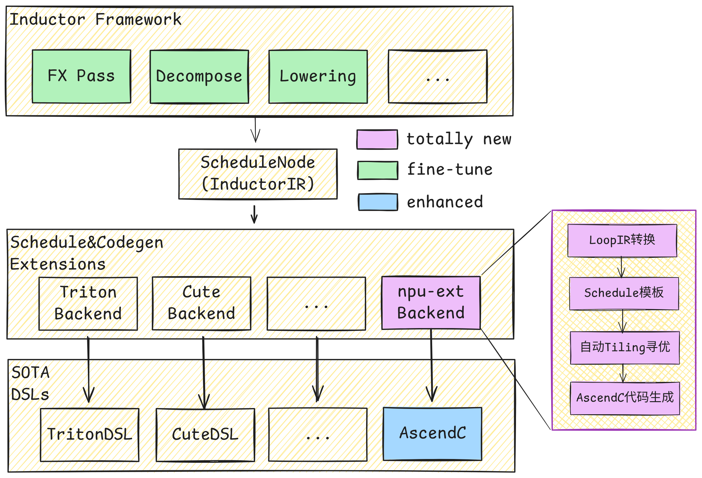

torch.compile 支持
torch.compile 是 PyTorch 2.0 的核心特性。通过 JIT （即时编译），将 PyTorch 代码转化为高度优化的融合算子，在几乎不改动原有代码的前提下显著提升性能。作为 PyTorch 原生的分布式训练框架，torchtitan 的一大优势便是可以便捷、充分地发挥 torch.compile 的性能收益。在此基础上，torchtitan_npu 结合 CANN 生态的编译能力，在 NPU 平台上的分布式训练任务中为 torch.compile 提供支持。
NPU 上的 torch.compile
在 torch.compile 的工作流程中，PyTorch 代码依次经过 Dynamo 成图， Inductor 图编译优化、Codegen，生成在硬件 runtime 上执行的优化 DSL 代码。

为了在 NPU 平台上充分利用 torch.compile 原生的编译能力，torchtitan_npu 在保留 Dynamo 与 Inductor 既有编译流程的基础上，接入了 Codegen 后端 inductor-npu-ext。该后端借助 AutoFuse 的自动融合能力，从 Inductor IR 生成 AscendC 融合 Kernel。
torch.compile 示例
inductor_npu_ext 需要从源码安装。在运行环境内执行以下命令：
git clone https://gitcode.com/Ascend/torchair.git
cd torchair/experimental/_inductor_npu_ext/
pip3 install -e ./python/
cd -
编译配置在模型的 config_registry.py 中，对应CompileConfig 类：
from torchtitan.config import CompileConfig
compile = CompileConfig(
enable=True,
# 编译完整模型，而不是只编译loss
components=["model", "loss"],
)
启动训练任务前，设置以下环境变量：
export TORCHINDUCTOR_SIZE_ASSERTS=0
bash scripts/run_train.sh --compile.enable
支持范围
当前主线正在加速适配中。您可先在 v0.2.2-dev 分支体验该功能。
```
注意事项
⚠️ 修改模型结构后，需要清理缓存重新 compile
torch.compile 会缓存编译结果。当模型结构发生变化（如修改代码、切换分支、更新算子实现等）后，旧的缓存可能导致编译失败或运行异常。请执行以下命令清理缓存：
bash rm -rf /root/.cache rm -rf /tmp/* rm -rf ./torchinductor_root rm -rf ./torch_compile_debug rm -rf .npu_kernels_root